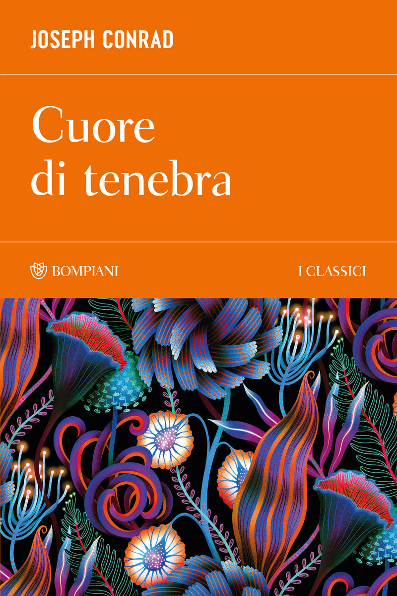

31:15 · 8 OPERE
L'apertura della Buchmesse 2024 con l'Italia quale ospite d'onore.
Il filo del discorso
Camminando all’esterno della Buchmesse 2024, con l’Italia ospite d’onore, Dr Divago commenta il primo giorno della fiera e lo interpreta come un segno della crisi dell’industria culturale. La distinzione iniziale fra incontri professionali, contrattazione dei diritti e affluenza del pubblico lascia presto spazio al contrasto fra la visibilità delle grandi campagne promozionali e i pochi titoli che, nella sua visita, ritiene intellettualmente significativi. Il manifesto del nuovo libro di Harari, il Banchiere anarchico di Pessoa e il richiamo a Cuore di tenebra diventano punti di passaggio di un giudizio severo sull’editoria e sul rapporto fra libro e televisione. Un colloquio allo stand Fazi sulla Filosofia della civiltà di Schweitzer introduce il problema della permanenza in catalogo e della memoria dei testi. La seconda parte intreccia questa critica con la polemica sul dibattito italiano relativo a Israele, Hamas e all’antisemitismo: il relatore avanza paragoni storici e giudizi collettivi che la scheda mantiene attribuiti, senza assumerli come descrizioni dimostrate. Il timore della guerra nucleare conduce infine al tema dell’impotenza della parola e alla pulsione di morte di Freud, proposta dal relatore come ipotesi da discutere. Restano centrali la domanda su come conservare una cultura critica e la difficoltà di rivolgersi a un pubblico che egli considera distratto o ostile.
I libri nel discorso
Nexus. Breve storia delle reti di informazione dall’età della pietra all’IA
Identificazione probabile
Copertina: Bompiani, 2024, traduzione di Marco Piani; ISBN 9788830137998. Edizione italiana di riferimento; il manifesto Penguin non è stato identificato visivamente.
Copertina autentica Bompiani del 2024, fondo chiaro, piccione e titolo rosso. Non è la fotografia del manifesto Penguin citato e non è attribuita al video come edizione vista o letta.
Nuovo libro di Harari nel manifesto Penguin, titolo non pronunciato; Nexus probabile per il programma ufficiale Buchmesse 2024.
Passaggio 2:47 ↗ · Fonti e libro ↗Il banchiere anarchico
Copertina: Passigli, 2022, a cura di Ugo Serani, 96 pagine; ISBN 9788836818136. Edizione di riferimento, non identificata nello stand.
Copertina autentica Passigli, fondo rosato, ritratto di Pessoa, titolo e autore leggibili. Non prova che questa fosse la copia dello stand portoghese.
Fernando Pessoa, Il banchiere anarchico, esplicito; volume riferito come visto nello stand portoghese.
Passaggio 3:10 ↗ · Fonti e libro ↗
Cuore di tenebra
Copertina: Bompiani · I Classici · 2026 · traduzione di Mario Curreli
Immagine autentica dell’opera, controllata visivamente; l’edizione di riferimento non è attribuita al filmato.
Cuore di tenebra di Conrad, titolo e autore espliciti, usati come allusione alla visita.
Passaggio 4:16 ↗ · Fonti e libro ↗
L’uomo a una dimensione
Copertina: Einaudi, Piccola Biblioteca Einaudi, 1999
Copertina di un’edizione bibliografica dell’opera, con introduzione di Luciano Gallino. La citazione nel video resta probabile; questa edizione non vi è confermata.
Marcuse e L’uomo a una dimensione, espliciti, fra i testi che il relatore non vede negli stand italiani.
Passaggio 15:27 ↗ · Fonti e libro ↗The Decay and Restoration of Civilization
Identificazione probabile
Copertina della raccolta: Prometheus · The Philosophy of Civilization · 1987 · raccolta in inglese
Copertina della raccolta Prometheus del 1987 che contiene The Decay and Restoration of Civilization e Civilization and Ethics. I due saggi, originariamente distinti, restano voci separate. L’edizione in inglese dell’immagine non è attribuita al video.
Filosofia della civiltà di Albert Schweitzer e colloquio allo stand Fazi: rinvio alla prima parte dell’opera complessiva, non titolo autonomo pronunciato.
Passaggio 15:36 ↗ · Fonti e libro ↗Civilization and Ethics (Kultur und Ethik)
Identificazione probabile
Copertina della raccolta: Prometheus · The Philosophy of Civilization · 1987 · raccolta in inglese
Copertina della raccolta Prometheus del 1987 che contiene The Decay and Restoration of Civilization e Civilization and Ethics. I due saggi, originariamente distinti, restano voci separate. L’edizione in inglese dell’immagine non è attribuita al video.
Filosofia della civiltà di Albert Schweitzer e colloquio allo stand Fazi: rinvio alla seconda parte dell’opera complessiva, senza duplicare il volume italiano.
Passaggio 15:36 ↗ · Fonti e libro ↗
Sulla stupidità
Identificazione probabile
Raccolta: Queriniana · Resistenza e resa · edizione di riferimento
Copertina di Resistenza e resa, raccolta indicata dal relatore come provenienza del testo Sulla stupidità. Non è una copertina autonoma del saggio; edizione e traduzione non attribuite alla lettura.
Bonhoeffer e riflessioni sulla stupidità: rinvio probabile al saggio, titolo non pronunciato.
Passaggio 21:33 ↗ · Fonti e libro ↗Al di là del principio di piacere
Identificazione probabile
Copertina: Bollati Boringhieri, Biblioteca Bollati Boringhieri, catalogo 1977, traduzione di Anna Maria Marietti Solmi e Renata Colorni, 112 pagine; ISBN 9788833900551. Testo originale del 1920, data della ristampa fotografata non accertata.
Copertina autentica Bollati Boringhieri, verde scuro e arancio, autore e titolo leggibili e disegno a spirale. L’immagine non certifica una tiratura del 1977 né un volume mostrato nel filmato.
Freud e pulsione di morte dopo la Prima guerra mondiale; titolo del saggio non pronunciato, collegamento probabile.
Passaggio 29:36 ↗ · Fonti e libro ↗